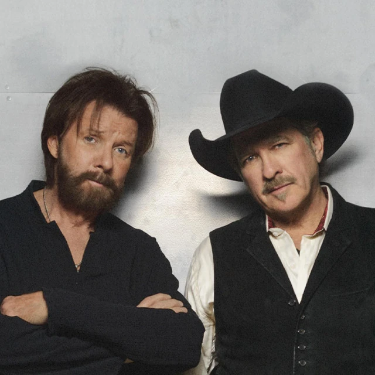

Brooks & Dunn
Years Active: 1988–2010, 2015–present
Genre/s: Neotraditional country
Label/s: Arista Nashville, Sony Music Nashville
Members: Kix Brooks, Ronnie Dunn
Brooks & Dunn are an American country music duo consisting of Kix Brooks and Ronnie Dunn, both of whom are vocalists and songwriters. The duo was founded in 1988 through the suggestion of songwriter and record producer, Tim DuBois. Before their formation, both members were solo recording artists, having each charted two solo singles in the 1980s. Kix Brooks also released an album for Capitol Records in 1989 and wrote hit singles for other artists.
The duo signed to Arista Nashville after their formation. They have recorded eleven studio albums, one Christmas album, and five compilation albums for the label. They also have released 50 singles, of which 20 went to number one on the Hot Country Songs charts and 19 more reached top 10. Two of these number-one songs, "My Maria" (a posthumous cover of the 1973 B. W. Stevenson hit) and "Ain't Nothing 'bout You", were the top country songs of 1996 and 2001, respectively, according to the Billboard Year-End charts. The latter is also the duo's longest-lasting number-one single on that chart at six weeks. Several of their songs have also reached the Billboard Hot 100, with the number-25 peaks of "Ain't Nothing 'bout You" and "Red Dirt Road" being their highest there. Brooks and Dunn also won the Country Music Association Vocal Duo of the Year award every year between 1992 and 2006, except for 2000. Brooks and Dunn won the award again in 2024. Two of their songs won the Grammy Award for Best Country Performance by a Duo or Group with Vocal: "Hard Workin' Man" in 1994 and "My Maria" in 1996. All but two of the duo's studio albums are certified platinum or higher by the Recording Industry Association of America; their highest-certified is their 1991 debut album, Brand New Man, which is certified sextuple-platinum for shipments of six million copies.
The duo's material is known for containing influences of honky-tonk, mainstream country, and rock, as well as the contrast between their singing voices and on-stage personalities, although some of their music has also been criticized as formulaic. Their 1992 single "Boot Scootin' Boogie" helped repopularize line dancing in the United States, and 2001's "Only in America" was used by both George W. Bush and Barack Obama in their respective presidential campaigns. Brooks and Dunn have collaborated with several artists, including Reba McEntire, Vince Gill, Sheryl Crow, Mac Powell, Billy Gibbons, Jerry Jeff Walker, and Luke Combs.
After announcing their retirement in August 2009, they performed their final concert on September 2, 2010, at the Bridgestone Arena in Nashville, Tennessee. Both Brooks and Dunn have continued to record for Arista Nashville as solo artists. Dunn released a self-titled album in 2011, which included the top-10 country hit "Bleed Red", while Brooks released New to This Town in September 2012. The duo reunited in 2015 for a series of concerts with Reba McEntire in Las Vegas. In 2019, the duo was inducted into the Country Music Hall of Fame.